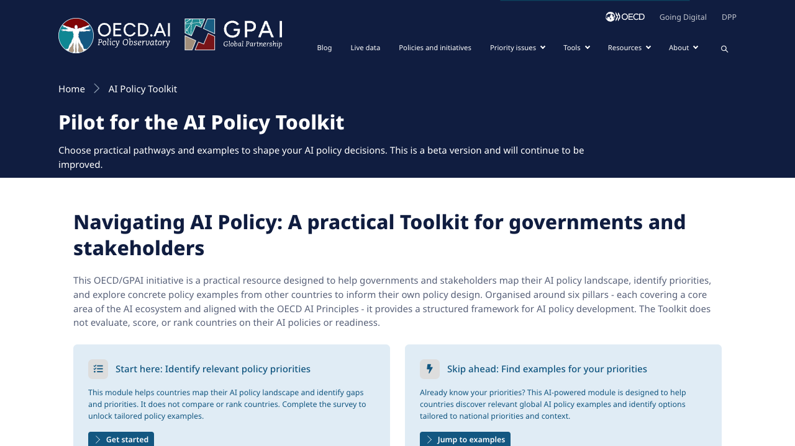
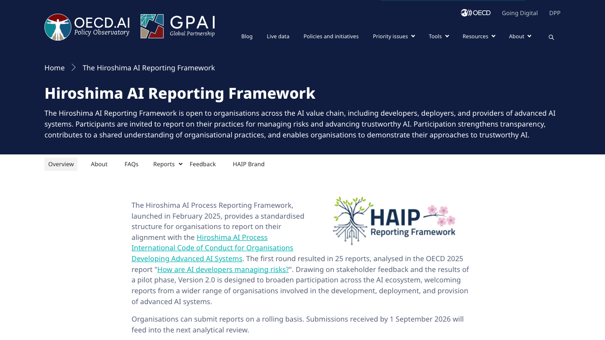
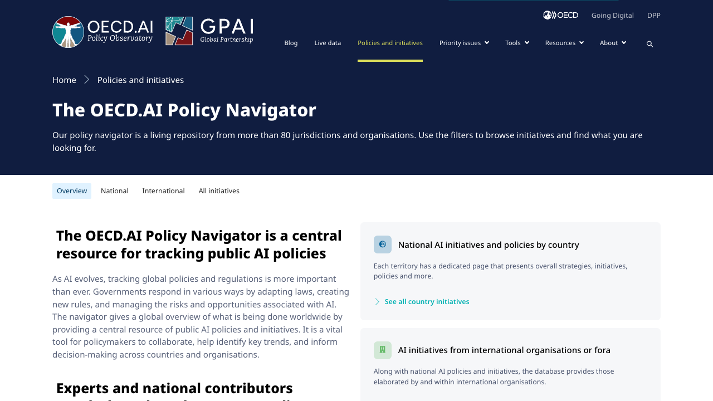
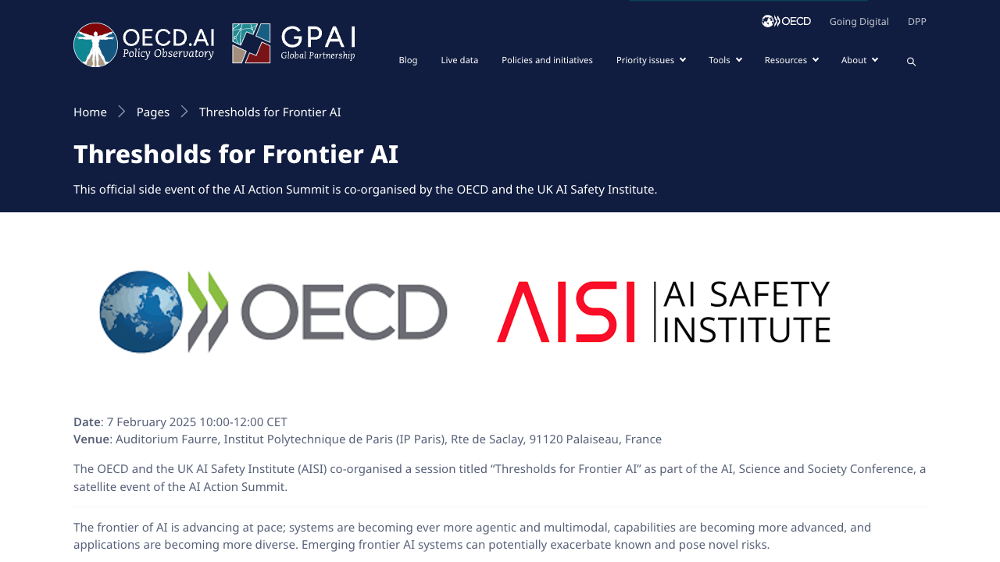
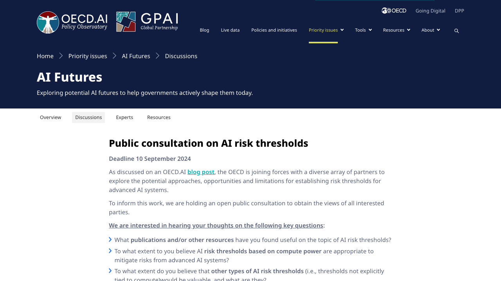

Projects
Tools and initiatives I have contributed to at OECD.AI.

OECD/GPAI AI Policy Toolkit
A practical resource to help governments map their AI policy landscape, identify priorities, and draw on initiatives from 80+ countries.

G7 Hiroshima AI Process Reporting Framework V2.0
A voluntary international framework for organisations to report on AI governance and risk management practices.

OECD AI Policy Navigator
An interactive platform making national AI policies from around the world searchable and comparable.

OECD Frontier AI Threshold Panel
A panel co-organised with the UK AI Safety Institute on setting thresholds for frontier AI risks.

OECD Frontier AI Threshold Consultation
A public consultation gathering perspectives on risk thresholds for advanced AI systems.